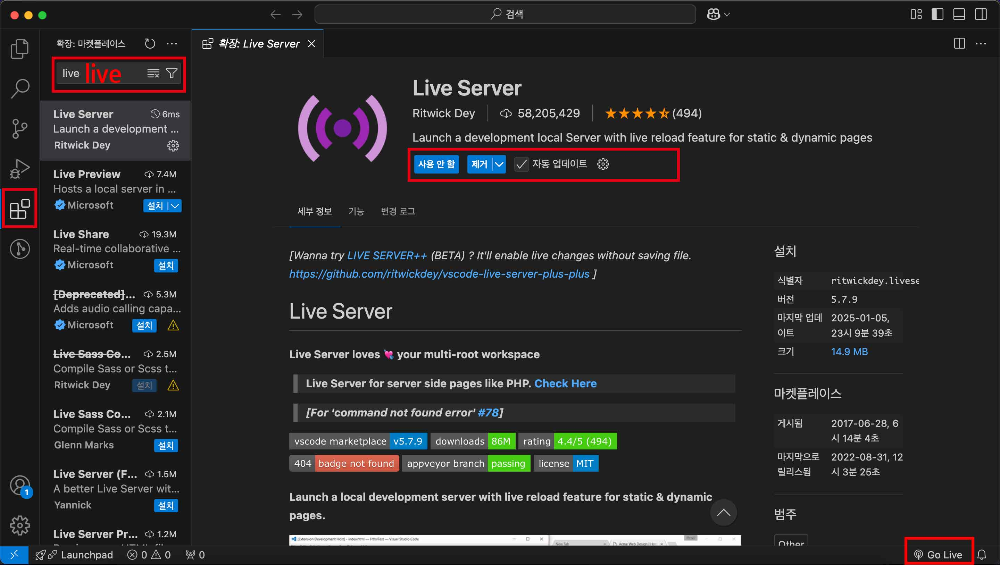
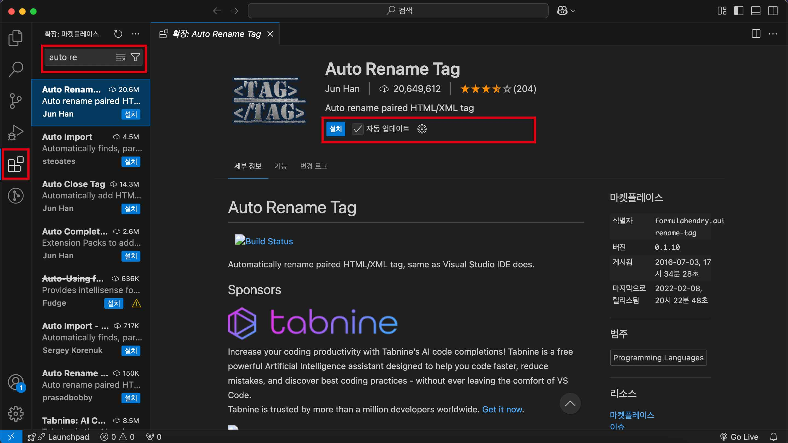

비주얼 스튜디오(Visual Studio) 확장 프로그램 10개 추천

왼쪽 5번째 아이콘인 '확장: 마켓플레이스'에서 모든 확장프로그램을 다운받을 수 있습니다.
1. Live Server
HTML을 다루는 개발자들이 제일먼저 다운받고, 가장많이 사용하는 확장 프로그램중 1위는 'Live server' 라고 할 수 있습니다.
해당 프로그램을 설치하면 앞으로 Ctrl + S로 저장 후, 페이지 새로고침 없이 바로바로 반영되는 로컬페이지를 열 수 있습니다.
검색창에 live 검색 후 위의 이미지와 같은 프로그램을 설치하면 됩니다.
주의사항 및 사용법
사용법: 설치 후 오른쪽 밑의 'Go Live' 클릭 (만약 안보인다면 VScode 껐다키시면 됩니다.)
주의사항: 반드시 '폴더열기'나 VScode로 폴더를 끌어놓아야 작동됩니다. 폴더형태가 아닌 파일형태는 'Go Live'가 작동되지 않습니다.

< 확장 프로그램 안의 예제화면 >
2. HTML CSS Support
HTML 파일에서 이전에 사용했던 id나 class명을 자동완성 해주는 유용한 확장프로그램 입니다.
동일한 class명과 id를 여러번 사용할때 오타를 줄여줍니다.
3. Auto Rename Tag
태그 수정 시 <>여는태그와 </>닫는태그를 동시에 수정해주는 확장 프로그램 입니다.
가끔 태그수정 시 한쪽만 수정하게되는 불상사를 막아줍니다.

< 확장 프로그램 안의 예제화면 >
4. htmltagwrap
가끔 작업중인 코드를 다른태그로 감싸고싶을때가 있는데, 그럴때 유용한 확장 프로그램 입니다.
사용방법: 감싸고싶은 코드 선택 후 Alt + w 클릭
(Mac의 경우 option + w 클릭)

< 확장 프로그램 안의 예제화면 >
5. HTML End Tag Labels
작업시 </>닫는태그가 중복되면 헷갈릴때가 많습니다.
해당 확장프로그램은 닫는태그 옆에 관련된 id나 class를 주석으로 달아주기때문에, 좀 더 가독성이 좋습니다.

< 확장 프로그램 안의 예제화면 >
6. HTML Enter++
작업 시 <br> 줄바꿈 태그를 쓸일이 아주많습니다.
특히나 글씨를 직접 쓸수록 <br>태그 자동완성이 간절해지는데 아주 유용한 확장 프로그램입니다.
사용방법: Shift + Enter

< 확장 프로그램 안의 예제화면 >
7. image preview

<img> 태그에서 scr="~~"에 매칭된 이미지를 미리볼 수 있는 확장 프로그램입니다.
만약 이미지 이름이 1,2,3...과 같이 명확하지 않은 상태거나, 이미지를 확인할때마다 폴더파일 열어서 확인중이라면 꽤나 유용하게 사용가능한 프로그램입니다.
8. Html Auto Completion
살짝의 꼼수(?)와도 비슷한 확장프로그램 입니다.
자주쓰이는 table, form의 구성을 자동완성 시켜줍니다.
주의사항: 반드시 html파일 상태여야 작동됩니다.
사용방법:
- !table 작성 + Enter
- !table 작성 + Enter
( !html 작성 + Enter 는 기존 VScode에서 지원하는 ! + Tab 키와 동일합니다. )
9. Autoprefixer
크로스브라우징을 할때에 브라우저마다 지원하는 기능들이 달라 작업의 마지막에는 항상 프리픽스를 붙여야합니다.
많이 사용하는 프로픽스 홈페이지에서 변환해도 됩니다만, 확장프로그램으로도 변경 가능하여 소개해 드립니다.
사용방법: CSS 파일에서 F1 + Autoprefixer: Run 클릭

< 확장 프로그램 안의 예제화면 >
10. Korean Language Pack for Visual Studio Code
영어 울렁증 있으신분들의 필수 확장프로그램입니다.
한글에 익숙해지면 영어로 변경해도 두려움이 덜하게되니 차근차근 VScode에 익숙해지고 싶은신 분들께 추천드립니다.
(설치했는데 적용 안되시면 재시작 후 확인해주세요)
이 밖에도 많은 확장프로그램이 있으니 나머지는 검색하십셔~
₍₍ (̨̡⸝⸝ •̀ө•́⸝⸝)̧̢ ₎₎